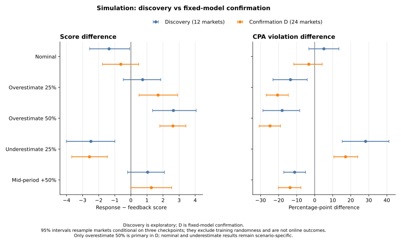
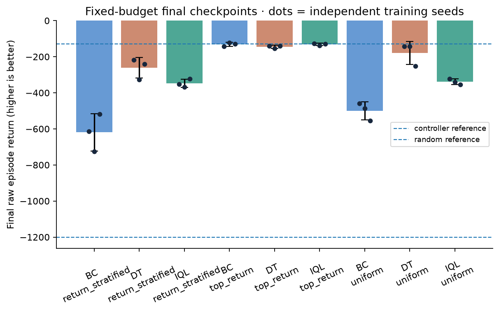

运行 CPU 小例子与核对预期输出 ↗ · 14 阶段的问题、假设与实验演进 ↗
6 个新开发市场、24 种对照中，事后最优专家选择相对强简单反馈仅 +2.27%，未达 +3% 门槛。未拟合选择器，未开启确认；公开权重和完整生成路径可复核。
方法、结果与边界 ↗24 个新市场中，后验补回相对 arrived-only 的 score +1.21%，未达 +3% 实用门槛；高估、长延迟格退化。估计改善需要单独接受决策检验。
方法、结果与边界 ↗各阶段使用的市场、基线和确认规则不同，百分比不能跨阶段直接比较。
固定乘数、反馈控制、DT 与响应模型的完整比较；完成实验不等于证实收益。
12 个测试市场 · 3 个训练种子 · 每市场请求 500,000 PV
完整报告与原始记录 ↗小规模开发结果用于检查流程和失败边界，不能据此证明方法有效。
4 个开发评估市场 · 1 个训练种子 · 每市场请求 50,000 PV
完整报告与原始记录 ↗24 个全新市场，4,320 条记录；主比较是高估 50% 时原 response 相对冻结反馈策略。方案在发现旧结果后制定、在生成新市场前冻结，不重开失败控制器的晋级门槛。
主场景 score 相对差 +17.6%，转化均值比见下表；名义与低估结果仍需结合全部场景判断。
| 主指标 | 效应与市场 bootstrap 95% 区间 |
|---|---|
| score 差 | +2.617 [+1.801, +3.424] |
| 转化均值之比 | 1.084 [1.053, 1.119] |
| 违约频率差（百分点） | -24.77 [-30.79, -18.98] |
其他四个场景及固定乘数对照全部保留在报告中。区间条件于三个固定检查点和同一模拟构造，不表示全面领先或线上收益。

严重高估场景的优势得到新市场支持；低估场景仍明显退化，名义 score 差区间跨零。D 只有高估 50% 为主场景；其余场景均为次要描述。区间条件于三个固定模型。
在相同验证行为轨迹上比较三个神经模型种子、ridge 与训练集经验曲线。经验曲线仅有当前时段预测。分别查看当前／剩余响应的误差和预测总量比，检查预测是否适合资源决策。这是已用于模型选择的验证集诊断，不能单独证明出价收益或控制器瓶颈。
复用两个冻结策略，1,080 个周期的重放结果与原记录完全一致。检查各自所选动作上的预测误差、零动作频率和前 12 个时段的预算节奏；策略改变访问状态与动作分布，误差方向也可能反转。这些诊断能缩小下一步研究问题，不能确认唯一因果瓶颈。
以下三份已完成的基础实验研究数据选择、公开任务与机制校验，保留完整报告及原始记录。
3 views · 3 methods · 3 training seeds
27 completed runs ↗02 · 公开任务20,000 training transitions · recovered evaluation environment
9 completed runs ↗03 · 机制校验Zero advantage temperature · matched BC actor comparison
3 completed runs ↗| Data view | Method | Raw return · mean ± seed std |
|---|---|---|
| return_stratified | BC | -619.17 ± 103.72 |
| return_stratified | DT | -261.63 ± 57.39 |
| return_stratified | IQL | -347.90 ± 23.37 |
| top_return | BC | -131.85 ± 11.09 |
| top_return | DT | -144.99 ± 8.42 |
| top_return | IQL | -131.25 ± 5.75 |
| uniform | BC | -500.54 ± 49.49 |
| uniform | DT | -179.54 ± 63.31 |
| uniform | IQL | -338.98 ± 15.52 |
每组先对八个评测回合求均值，再对三个训练种子汇总。回报越高越好。
| Data view | Method | Raw return · mean ± seed std |
|---|---|---|
| uniform | BC | 79.04 ± 10.35 |
| uniform | DT | 201.62 ± 17.66 |
| uniform | IQL | 80.71 ± 6.77 |
每组先对八个评测回合求均值，再对三个训练种子汇总。回报越高越好。
| Data view | Method | Raw return · mean ± seed std |
|---|---|---|
| uniform | IQL | -500.54 ± 49.49 |
每组先对八个评测回合求均值，再对三个训练种子汇总。回报越高越好。
